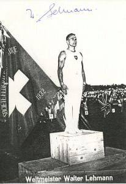

Walter Lehmann (SUI)
1948 Olympic AA Silver
Medalist
1950 World AA Champion

Medal Total
Olympic Games: 3
Silver
World Championships: 3 Gold, 3
Bronze
Competition Results
1948
Olympic Games: 2nd Team, 2nd AA, 2nd HB, 4th R,
4th PB, 5th V
1950
World Championships: 1st Team, 1st AA, 1st R, 3rd
PH, 3rd V, 3rd HB, 4th PB
This page was created on September 12, 2004.
© Gymn Forum